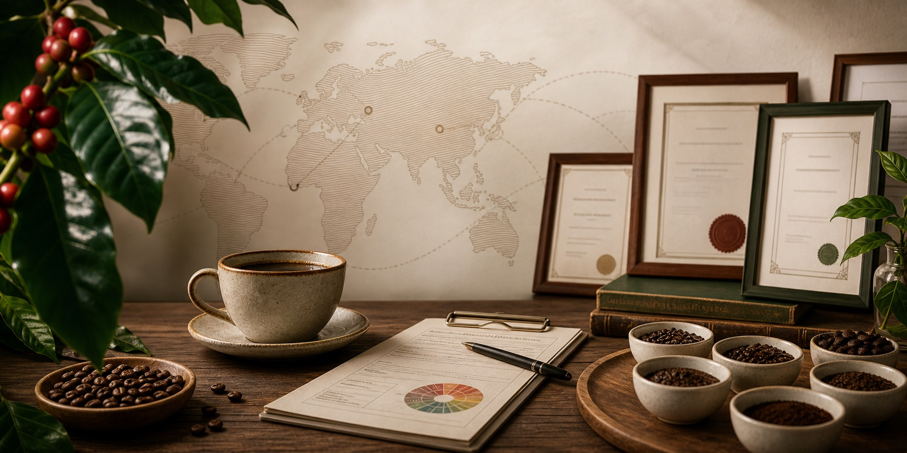
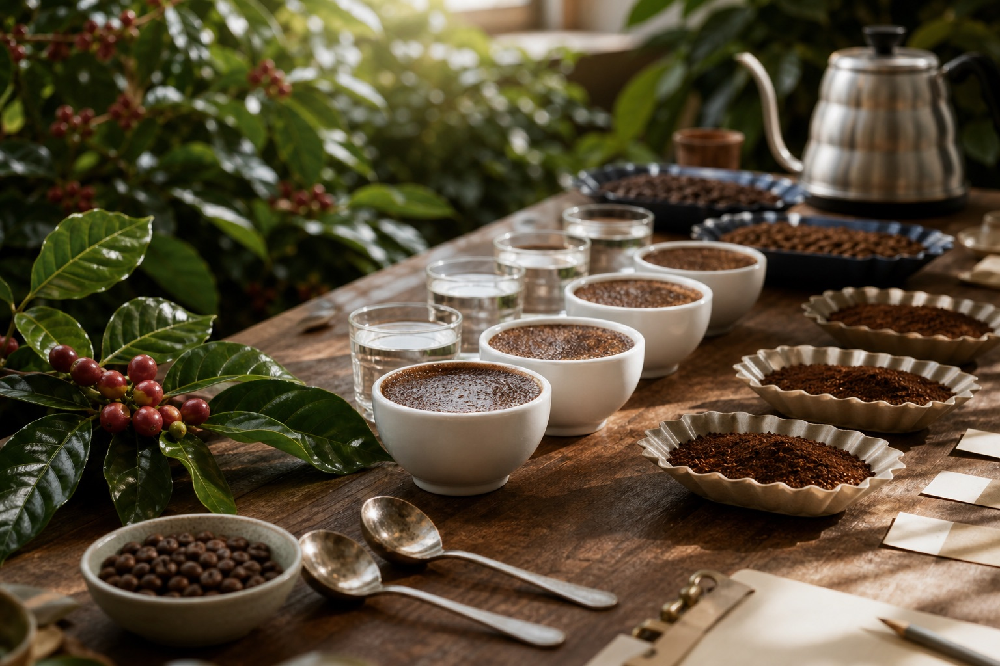
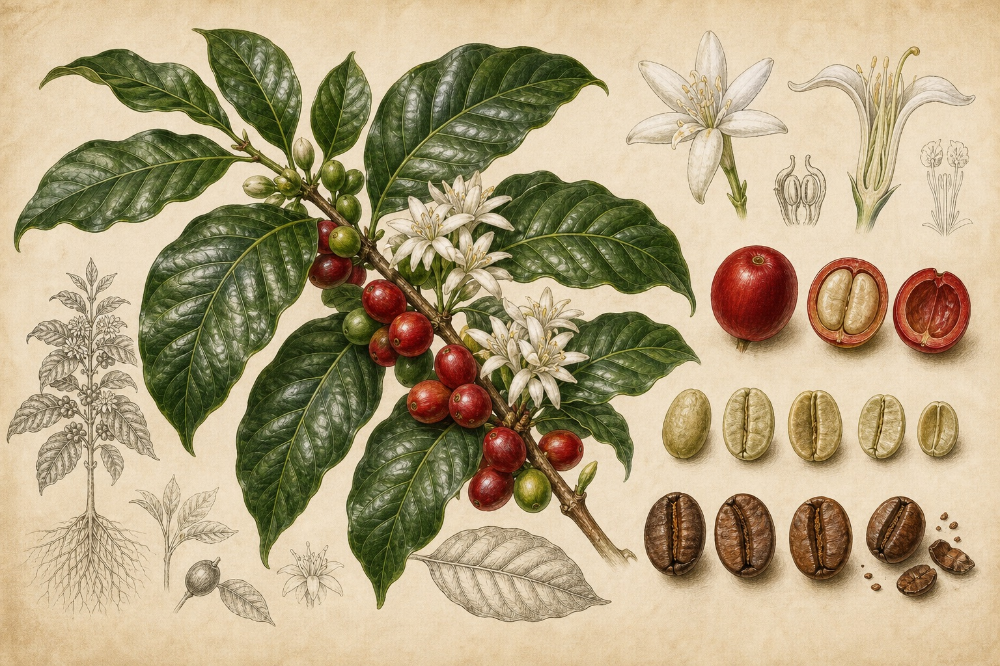
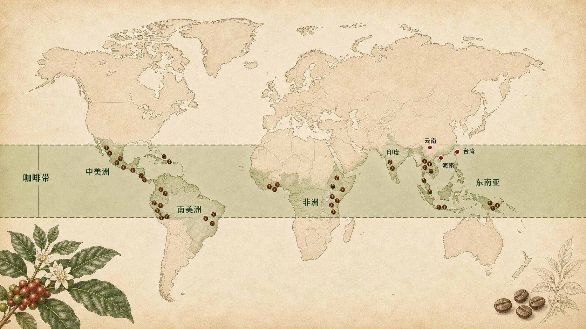
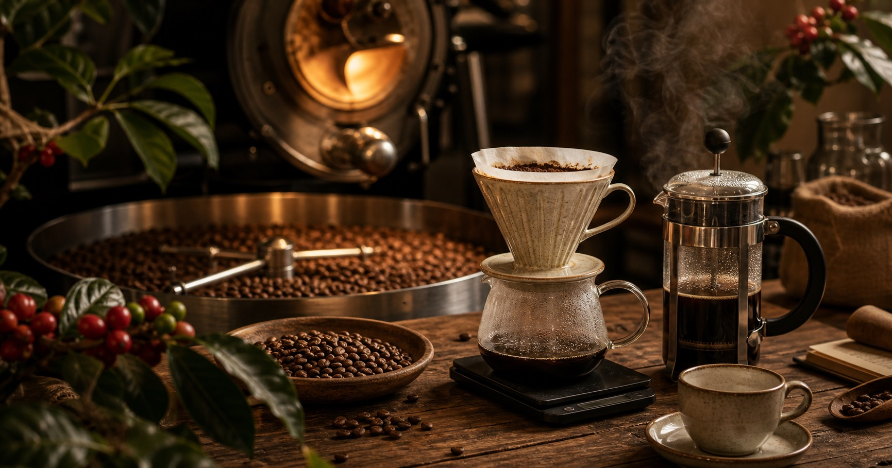
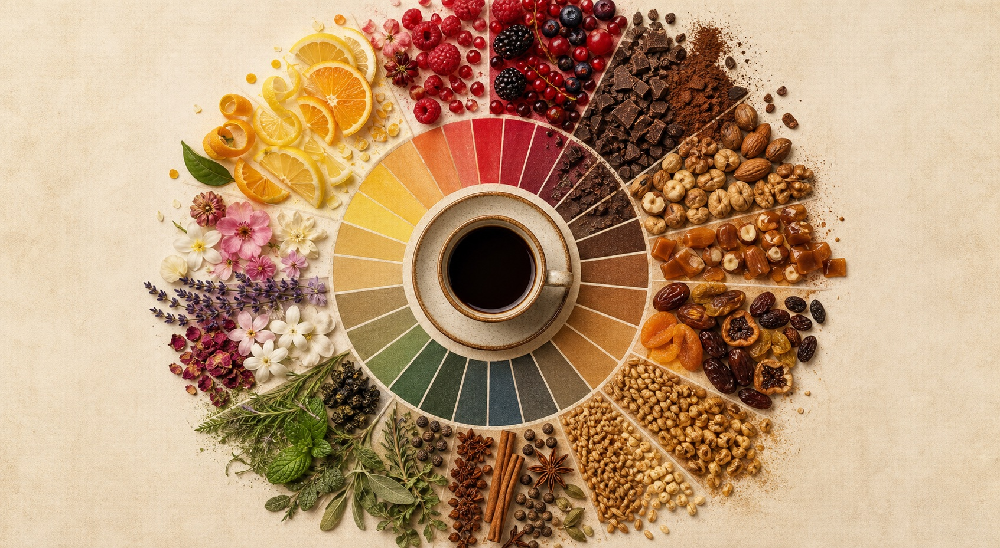

欧美的合并
SCA 是今天精品咖啡领域最常被引用的全球性协会。它在 2017 年 1 月由美国精品咖啡协会 SCAA 与欧洲精品咖啡协会 SCAE 统一而来，继承了两边在标准、教育、赛事与行业网络上的积累。
- SCAA 成立于 1982 年，偏重美国精品咖啡贸易与质量标准。
- SCAE 成立于 1998 年，连接欧洲精品咖啡社群与教育网络。
- 合并后的 SCA 把研究、标准、教育、活动放进一个全球框架。
咖啡行业的专业组织大致分成三类：建立标准与教育体系的行业协会，提供市场与政策协作的平台，以及围绕技能、质量、可持续性建立的认证系统。

SCA 是今天精品咖啡领域最常被引用的全球性协会。它在 2017 年 1 月由美国精品咖啡协会 SCAA 与欧洲精品咖啡协会 SCAE 统一而来，继承了两边在标准、教育、赛事与行业网络上的积累。
中国侧的咖啡组织更分散，常见入口包括中国咖啡豆分会 CCA、云南省及普洱等主产区机构、地方产业协会与咖啡赛事/培训组织。中国咖啡豆分会网站说明，其主要工作已转至中国亚洲经济发展协会咖啡国际合作专业委员会下。
认证不只是一张证书。它回答的是“谁认可、认可什么能力、是否可查、多久更新”。学习型认证、质量评价许可、职业技能等级和可持续认证的含义不同。

杯测是把咖啡样品放到同一套条件下比较的专业方法。新的 SCA Coffee Value Assessment 把“样品制备、描述性评价、喜好/质量印象、外在信息”拆开，减少偏见。
统一静置、研磨、水温、粉水比与杯测时间。
先闻干粉；注水后记录香气变化，不急着判断分数。
按统一动作破开表层咖啡渣，清理浮渣以便入口。
在不同温度下重复品尝，观察酸质、甜感、口感与余韵。
先写“什么问题”，再给出分数；没有坏味道可以给 7 分，有 3 种以上丰富味道可以给 8 分。
咖啡豆其实是咖啡果实里的种子。理解树、花、果、种和品种谱系，才能把“产地风味”从浪漫词汇变成可追问的农业事实。


咖啡主要分布在南北回归线之间的咖啡带。适宜性由纬度、海拔、温度、降雨、干湿季节、土壤排水和遮阴共同决定；海拔越高通常成熟越慢，酸质和香气层次更容易展开。
| 种与常用名 | 植物学线索 | 杯中倾向 | 学习重点 |
|---|---|---|---|
| Coffea arabica 阿拉比卡 | 原生于埃塞俄比亚；历史上由埃塞俄比亚传入也门再扩散。 | 酸质、甜感、花果调与复杂度通常更受精品市场关注。 | 约占全球咖啡生产 60% 左右。星巴克公开口径为只采购阿拉比卡；瑞幸公开强调高品质阿拉比卡；Costa 有阿拉比卡产品，但招牌浓缩拼配含罗布斯塔。 |
| Coffea canephora 卡内弗拉/罗布斯塔 | 起源于中西部撒哈拉以南非洲；商业栽培相对年轻。 | 更高咖啡因、厚重口感、坚果与木质调，精品罗布斯塔正在被重新评价。 | 约占全球咖啡生产 40% 左右，并在越南等产区快速增长。Costa 招牌拼配明确使用阿拉比卡与罗布斯塔；星巴克和瑞幸的公开核心叙事主要强调阿拉比卡。 |
| Coffea liberica 利比里卡 | 树体高、豆粒大，商业占比小，在气候压力下重新受到研究关注。 | 常被描述为木质、热带水果、花香或烟熏感，处理差异很大。 | 全球商业占比通常被估计在 1%-2% 以下，更多出现在马来西亚、菲律宾等小众市场。星巴克、Costa、瑞幸核心产品公开信息中没有把它作为主力豆种。 |
日常说“豆种”时，常把物种、品种、栽培品种、处理法和商品名混在一起。更清晰的看法是：先分清原始物种，再看阿拉比卡内部的传统品种、自然突变、地区选育和抗病杂交。
埃塞俄比亚地方种群向外扩散，形成铁皮卡 Typica 与波旁 Bourbon两条历史主干。
许多现代商业品种把阿拉比卡风味、卡内弗拉抗病基因和地方适应性组合在一起。
瑰夏 Gesha/Geisha 属于埃塞俄比亚来源的阿拉比卡地方种群；SL28、SL34 是肯尼亚选育；卡杜艾是 Mundo Novo 与 Caturra 杂交。
卡内弗拉包含 Robusta、Conilon 等类型，常用于浓缩拼配、速溶和精品罗布斯塔；利比里卡系统中，Excelsa 常被归入 Coffea liberica var. dewevrei。
云南位于咖啡黄金种植带，是中国咖啡主产地。2024 年发布的云南咖啡产业报告显示，云南咖啡种植面积约 119.31 万亩，占全国 97.85%；总产量 15.02 万吨，占全国 98.65%。产区主要分布在普洱、临沧、保山、西双版纳、德宏等地，以及怒江、澜沧江、红河、金沙江等流域海拔 900-1800 米区域。
学云南咖啡时，别只记“云南小粒”。更有用的是追问品种、海拔、采摘成熟度、发酵/水洗/蜜处理、干燥方式和烘培曲线；这些变量共同塑造杯中的坚果、焦糖、红果、茶感或发酵香气。

制作不是把器具摆好看，而是管理能量和萃取：热量如何进入豆子，水如何带走可溶物，时间如何改变风味比例。
预先处理连接采摘和烘培，决定生豆的清洁度、甜感、发酵香和干燥稳定性。云南常见基础路径可先分成水洗和日晒两大类。
烘培把生豆转化为可萃取的熟豆。浅烘通常保留更多酸质、花果和产地辨识度；深烘让焦糖化、苦甜、烘烤与烟熏感更突出。专业烘培关注的不是颜色口号，而是热传导、发展时间、失重率、豆温曲线与目标萃取场景。
重力滴萃让水持续穿过咖啡粉层，代表方法有手冲、滴滤和批量美式滴滤。浸泡则让咖啡粉与水整体接触，代表方法有法压、杯测和冷萃。两者不是高低之分，而是萃取结构不同。
风味轮的意义不是把咖啡说得玄，而是让不同人能用同一套词汇讨论香气、味觉、口感和余韵。本节使用实物风味谱图辅助理解，并保留中国咖啡品鉴师风味轮中的核心文字线索。

巧克力、谷物、坚果、糖类甜香。
典型词：可可粉、牛奶巧克力、黑巧克力、香米、黑麦、燕麦片、麦芽、夏威夷果、烤花生、烤杏仁、烤榛子、开心果、核桃、碧根果、香草、鲜奶油、焦糖、黄油、蜂蜜、枫糖、蔗糖、红糖。花香、果香、草本/植物、酒香类。
典型词：桂花、茉莉花、玫瑰、香蜂草、洋甘菊、咖啡花、香蕉、椰子、木瓜、百香果、芒果、菠萝、荔枝、柠檬、橙子、青柠、西柚、苹果、桃子、樱桃、蜜瓜、黑莓、蓝莓、覆盆子、草莓、葡萄、黑加仑、葡萄干、红枣干。香料、巧克力、炭烧等偏烘烤和香辛调。
典型词：丁香、洋葱、大蒜、香菜籽、肉桂、小豆蔻、肉豆蔻、姜、迷迭香、百里香、甘草、胡椒、罗勒、烤牛肉、烟斗。其它香气包括瑕疵缺陷、植物性和酒香类描述，判断时要更谨慎。
典型词：塑料、纸板、碘味、酚、胶皮、酸臭、泥土、霉味、咖啡果皮、生青豆荚、柴油、鱼腥味、麻袋味、土味、烟、灰烬、干木头、烧焦、绿茶、青椒、红茶、薄荷、黄瓜、番茄、青草、蘑菇、雪松、香槟、雪莉酒、威士忌、红葡萄酒、白葡萄酒、朗姆酒、白兰地、米酒。